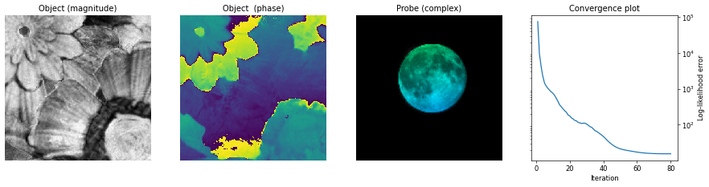

The Parameter Tree#
Getting familiar with the parameter tree using the MoonFlower simulation/reconstruction.
A ptychographic reconstruction requires a lot of input, from details about the data to the specifics of the reconstruction algorithm among others. All this information is typically summarised in a parameter tree. In PtyPy, the parameter tree is a Python object - more specifically a dictionary-like ptypy.utils.Param object. This means that we can put together a Python script (or Jupyter notebook), define all relevant parameters and execute the script (notebook) to run a ptychographic reconstruction! Let’s have a look at this parameter tree and its building blocks…
Tip
A full list of available parameters can be found here: https://ptycho.github.io/ptypy/rst/parameters.html
First, we need to import ptypy.
import ptypy
import ptypy.utils as u
We start by creating an empty root parameter tree p.
p = u.Param()
We set the verbose_level to "interactive" which is preferred for Jupyter notebooks since it gives a more condensed user output. Other options to use are "info" or "debug" for a more detailed and verbose output.
p.verbose_level = "interactive"
Next we create a subtree for input/output related parameters. For this particular example, we don’t want to save any intermediary files and turn off automatic plotting.
p.io = u.Param()
p.io.rfile = None
p.io.autosave = u.Param(active=False)
p.io.autoplot = u.Param(active=False)
p.io.interaction = u.Param(active=False)
Note
Parameters can be specified as arguments to the u.Param class when creating a tree/subtree, like
p.io.interaction = u.Param(active=False)
instead of
p.io.interaction = u.Param()
p.io.interaction.active = False
PtyPy allows us to define multiple scans in a single reconstruction, but in most cases we just define a single scan instance. In this case, we create a scan of type (scan model) "Full" and call it MF (named after the MoonFlower simulation example used here) but it could be named differently.
p.scans = u.Param()
p.scans.MF = u.Param()
p.scans.MF.name = "Full"
The scan model creates the Views, Containers and Storages for the object, probe and other data structures including the PODs which links them all together.
Tip
To learn more about these classes and their underlying concepts, visit this tutorial from the main PtyPy documentation.
As part of the scan we also need to define a data subtree, holding all relevant information related to the data (or simulated data) we are trying to reconstruct. For a real experiment, users can create their own data loader by subclassing ptypy.core.data.PtyScan or using the generic ptypy.experiment.hdf5_loader.Hdf5Loader. In this example, we are using the MoonFlowerScan which provides simulated diffraction data from a synthetic probe (the moon) and a synthetic object (the flower).
p.scans.MF.data= u.Param()
p.scans.MF.data.name = "MoonFlowerScan"
p.scans.MF.data.shape = 128
p.scans.MF.data.photons = 1e8
# The following parameters are only used for the simulation
p.scans.MF.data.num_frames = 200
p.scans.MF.data.density = 0.2
p.scans.MF.data.psf = 0.
Tip
To learn more about data management and how to subclass PtyScan, visit this tutorial from the main PtyPy documentation.
Finally, we need to define one (or more) reconstruction engines which specify which ptychographic algorithm(s) should be used in the reconstruction. In this example, we define engine00 to use the difference map (DM) algorithm with 80 iterations.
p.engines = u.Param()
p.engines.engine00 = u.Param()
p.engines.engine00.name = "DM"
p.engines.engine00.numiter = 80
p.engines.engine00.numiter_contiguous = 1
At the end of our script (notebook) we can create a ptypy.core.Ptycho object by passing the parameter tree p and level=5 which initialises everything and starts the reconstruction.
P = ptypy.core.Ptycho(p,level=5)
After loading/simulating the diffraction data, initialising the model/engine and running 80 iterations of difference map the output should look something like this
Full: loading data for scan MF (161 diffraction frames, 161 PODs, 1 probe(s) and 1 object(s))
Full: loading data for scan MF (reformatting probe/obj/exit)
Full: loading data for scan MF (initializing probe/obj/exit)
DM: initializing engine
DM: preparing engine
DM: Iteration # 80/80 :: Fourier 5.37e+01, Photons 1.55e+01, Exit 4.78e+00
==== This reconstruction relied on the following work ==========================
The Ptypy framework:
Enders B. and Thibault P., "A computational framework for ptychographic reconstructions" Proc. Royal Soc. A 472 (2016) 20160640, doi: 10.1098/rspa.2016.0640.
The difference map reconstruction algorithm:
Thibault et al., "Probe retrieval in ptychographic coherent diffractive imaging" Ultramicroscopy 109 (2009) 338, doi: 10.1016/j.ultramic.2008.12.011.
================================================================================
To visualise the results of the reconstruction, we can use ptypy.utils.plot_client.figure_from_ptycho(P) to produce an image like this

Challenge
Run the MoonFlower example below and inspect some of the attributes of the Ptycho instance P, like P.obj, P.probe and P.diff. These are all containers which are connected to .storages and have a list of .views. From a single object view, we can find out information about for example the reconstructed pixelsize: P.obj.views[“V0000”].psize.
Challenge
Change the verbose_level to info or debug and observe the change in output. In the section just above the summary of the engine parameters, you should find a list of storages which also contains information about the reconstructed pixel size in the object.
Challenge
Where the Ptycho instance is being created, change the level from 5 to 4 and observe the output. At level 4, PtyPy does all the data loading but it stops before invoking the engine. This can be useful if you would like to modify the P instance just before running the engine with P.run()
import ptypy
import ptypy.utils as u
# Create parameter tree
p = u.Param()
# Set verbose level, can be "interactive", "info" or "debug"
p.verbose_level = "interactive"
# Basic I/O settings (no files saved in this case)
p.io = u.Param()
p.io.rfile = None
p.io.autosave = u.Param(active=False)
p.io.autoplot = u.Param(active=False)
p.io.interaction = u.Param(active=False)
# Define the scan model
p.scans = u.Param()
p.scans.MF = u.Param()
p.scans.MF.name = "Full"
# Data loader / simulator
# Generate 200 frames (128x128px) of diffraction data
p.scans.MF.data= u.Param()
p.scans.MF.data.name = "MoonFlowerScan"
p.scans.MF.data.shape = 128
p.scans.MF.data.photons = 1e8
# the following parameters
# are only used for the simulation
p.scans.MF.data.num_frames = 200
p.scans.MF.data.density = 0.2
p.scans.MF.data.psf = 0.
# Define reconstruction engine
p.engines = u.Param()
p.engines.engine00 = u.Param()
p.engines.engine00.name = "DM"
p.engines.engine00.numiter = 80
p.engines.engine00.numiter_contiguous = 1
# Prepare and run
P = ptypy.core.Ptycho(p,level=5)
# Display the results
fig = ptypy.utils.plot_client.figure_from_ptycho(P)